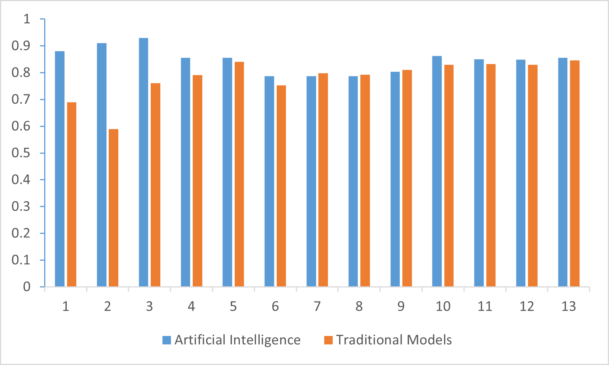

Technology Opportunities
Opportunities in AI screening for Lung cancer:
In healthcare and medicine AI is capable of screening and detecting lung cancer earlier than traditional methods. This page focuses on the opportunities that AI provides in the battle against lung cancer.
Early detection of lung cancer
Artificial intelligence (AI) has proven to be a powerful tool in the fight against lung cancer. This is because AI can handle large amounts of medical data that is simply beyond the biological human capacity to process information. By quickly processing massive amounts of data like CT scans and symptoms, AI can detect patterns that doctors and researchers will potentially miss. These patterns can often detect signs of cancer much earlier than traditional methods. Early diagnosis of lung cancer makes a huge difference for the fate of the patient. AI has the capability to do exactly that by flagging possible lung cancer through the patterns it has found in previous data. AI has the potential to provide valuable insights for doctors and researchers in spotting lung cancer as early as possible, giving patients a better chance of successful treatment. If AI is properly implemented to be widely used, they have the potential to help many more people get diagnosed earlier, which has the potential to save lives. Not only that, but earlier diagnosis also means earlier treatment, which could ease the pressure on the healthcare system and focus on more pressing matters they have on hand.
The study from Leonard et al., (2025) compared the AUC of Traditional regression model and AI, and showed that AI models consistently outperformed traditional regression models.

Note: this is the AUC values of different AI models compared to different Traditional models. These values are gathered from Leonard, S., Patel, M. A., Zhou, Z., Le, H., Mondal, P., Adams, S. J. (2025). Comparing Artificial Intelligence and Traditional Regression Models in Lung Cancer Risk Prediction: A Systematic Review and Meta-Analysis. Journal of the American College of Radiology. https://doi.org/10.1016/j.jacr.2025.02.042. The data shown above is only a portion of the total data.
Increased survival rates of cancer patients
The reason why lung cancer is so deadly is since it is often diagnosed too late for any effective treatment. By diagnosing lung cancer early, it will drastically increase the patient's survival rate. Artificial intelligence has potential in early detection of lung cancer. It is shown that many AI models (especially models that uses imaging data) has proven promising for improving lung cancer prediction over traditional models (Leonard et al, 2025). If AI is capable of detecting lung cancer in its early stages, it will greatly increase the survival rate of the cancer patients. The main reason why lung cancer is so deadly is because it is often diagnosed too late for effective treatment. This shows that early and accurate detection is crucial for lung cancer treatment (Choudhury et al., 2025). Raising survival rates means more people could go on to live fuller, longer lives instead of having their lives cut short by late-stage diagnosis. This impact extends beyond individuals—it reduces emotional and financial strain on families and can ease the overall burden on healthcare systems.
Reduce cost of lung cancer treatment:
Treatment takes less resources when diagnosed early. This saves the resource each patient used and allows the saved resources to be used on another patient and overall makes the treatment less of a financial burden for patients. According to Yousefi et al., (2023) the mean direct medical cost of treating lung cancer is 4484.13 to 45,364.48 PPP (purchasing power parity based on USD 2016). This shows that lung cancer is incredibly costly which can impose significant financial burden on the patients and family. The study Kakushadze et al., (2017) showed how treatment for stage 1 of lung cancer is only 61.1% of stage 4 lung cancer. This shows that diagnosing lung cancer early can greatly reduce the cost of lung cancer treatment.
Helps doctors and researchers find better treatments for lung cancer
If Artificial intelligence can provide early and accurate diagnosis for lung cancer, doctors and researchers could spend less time and resources focused on diagnosing. These time and resources that were spent on diagnostic could be redistributed to focus on cancer treatment. Artificial intelligence also It has the potential to provide valuable insight for doctors and scientists to aid in early diagnosis (Li et al, 2022). This could help us better understand lung cancer to counter it and further increase survival until it’s a thing of the past.
Made _ May 2025
by Meredith Zhong, Daniel Hawke, & Liam David Hackney Smith.